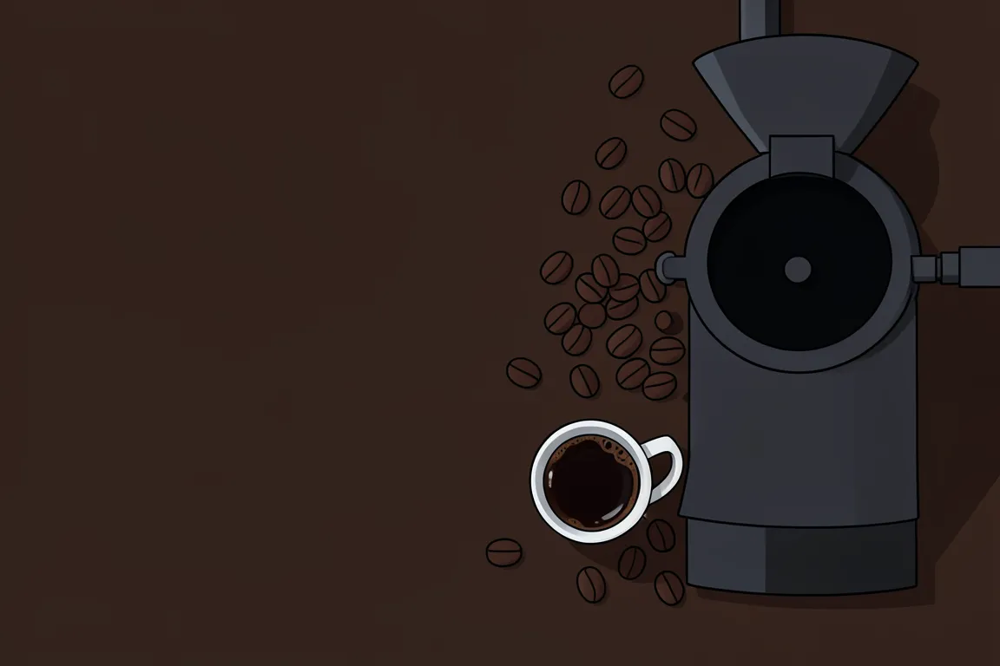

Nesten svarte flater, hårstrekkanter på 1px, én mettet aksent, en monospace til data og tastaturhint på hver handling. Det kom fra kodeeditorer og terminaler og definerer nå programvare for ingeniører.

Kjerneidé
Et verktøy for eksperter er et tett, rolig, mørkt instrument: vis mye, hold det stille og gjør alt tilgjengelig fra tastaturet.
Designprinsipper
Bruk en nesten svart bunn (#0B0B0E) og 2 eller 3 flatetrinn på 4 % til 8 % lyshet hver; ingen ren svart og ingen ren hvit.
Tegn hver kant som en hårstrek på 1px i hvitt ved 8 % til 12 % dekning; paneler har en radius på 6px til 8px.
Sett én aksentfarge (indigo #5A66E8 eller lignende) og bruk den på mindre enn 5 % av flaten: fokus, markering og primærknappen.
Sett UI-tekst på 13px til 14px i en nøytral sans og alle data, id-er og kode i en monospace på 12px til 13px.
Vis et tastaturhint i en tastehette med 1px kant (radius 4px, 11px tekst) ved siden av hver hovedhandling; tilby en kommandopalett på Cmd+K.
Gi hver rad en høyde på 32px til 40px og hold listene tette; skill rader med hårstrek, ikke med rom.
Bruk bevegelse på 100ms til 200ms bare til tilstandsendringer, uten inngangseffekter på innhold.